AI Agent 工程师 2026 路线图
12 步走完 7 个 pillar · Loops · Graphs · Evals · Context · Harness
前一年 frontier model 在 SWE-bench Verified 上从 30% 干到 80%+,但只有 17% 的高管说自己公司在生产里真正跑通了 AI agent。这篇 6.7 万浏览 X 长文给出了 12 步路线图——走过 7 个 pillar(Context / Tools / Memory / Loops / Graphs / Harness / Evals),每一步附 Claude workflow、可执行的代码片段、避坑清单。读完你会明白:任何人都能让 demo 跑起来,真正难的是 demo 之后那一整套系统。
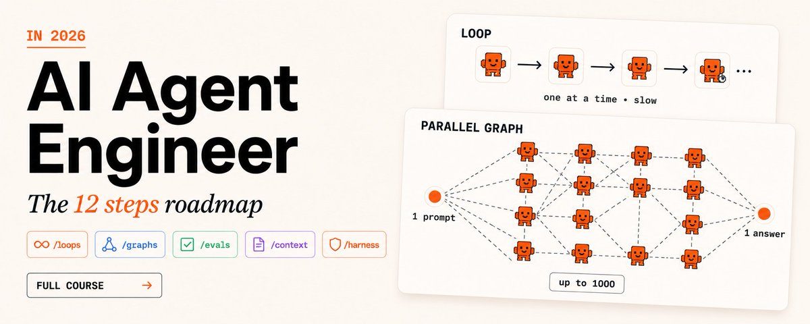
CODEZ · @0XCODEZ · 2026/08/17
作者是谁。Codez (@0xCodez)·Content creator + AI researcher & builder,San Francisco,substack.com/@0xmovez。长期分享 AI agent 工程落地的一手经验——他从 2030 视角看 AI 趋势,关注的是「怎么把 agent 真正跑上生产」,不是「demo 多炫」。
这篇文章在讲什么。一句话浓缩:agent 失败的真正原因不是 prompt——是 context 撑爆、loop 永远不收敛、你根本没数衡量上周的改动到底有没有让事情变好。demo 在你机器上能跑,生产是另一回事。这 12 步走完 7 个 pillar,每一步附 Claude workflow、可执行代码片段、避坑清单——读完你会知道下一步该装哪一块。
为什么这篇值得读。Codez 把这 12 步排成了一个 dependency order:foundation 先(execution second、reliability last)。每一步都是「如果你跳过这一关,下一关一定崩」的写法——不是 12 个独立技巧,是一个 skill 在 7 个维度的投影。读完你会意识到:很多你之前以为「这一代模型不够好」的问题,其实是这一整套系统里某一环没装。
怎么读这篇文章。12 步对应 12 章,每章顶部金句框 + Addy-style 口语化中文翻译(Codez 原句英文保留),原文里嵌入的 9 段代码片段全部按 `.code-block` 渲染成可读的代码面板,19 张原文配图按位置插入。最后一节是「7 个 jobs to run with Claude」行动清单 + 结尾。
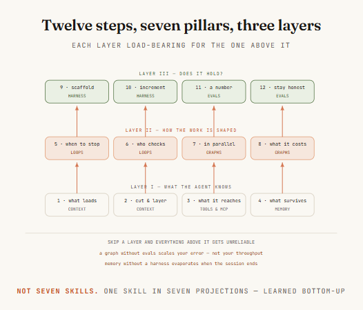
原文配图 · Codez (@0xCodez) · 2026/08/17 · 12 步走完 7 个 pillar · foundation 先(execution second、reliability last)的 dependency order 全景。
Bad context breaks the loop. A loop without evals never converges on anything you can trust. A graph without evals scales your error instead of your throughput.
— CODEZ · AI AGENT ENGINEER IN 2026 · 7-PILLAR REFRAME
Context - read what actually loads
Karpathy 那套框架是你该抓住的:模型是 CPU,context window 是 RAM。Context engineering 的艺术就是把这个 RAM 装得刚刚好——只装下一步需要的,不多装。
一个重新框定所有事的数字:在 Claude Code 里,你打一个字之前,大概有 7,850 个 token 已经加载好了——system prompt、auto memory、skill descriptions、CLAUDE.md、environment info、MCP 工具名。你真正打的 prompt 大概 45 个 token。
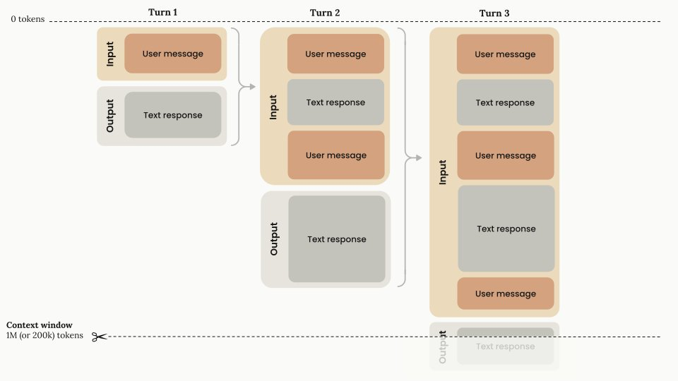
原文配图 · Codez (@0xCodez) · 2026/08/17 · /context 命令输出:7,850 vs 45 的真实 token 分布。
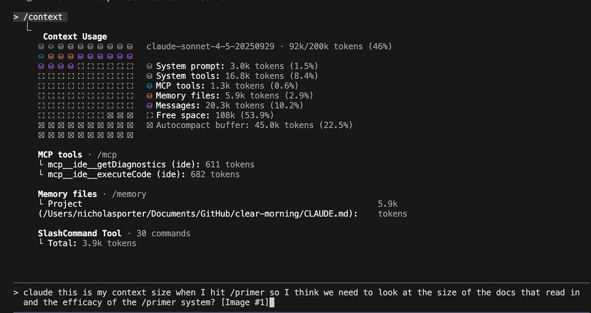
原文配图 · Codez (@0xCodez) · 2026/08/17 · Claude Code /context 命令实际输出:按类别拆 token、memory 文件清单、free space。
所有人都在优化那 45,从来没人打开过那 7,850。/context 命令能打印出按类别分布的真实组成——哪些 memory 文件加载了、哪个 tool call 吃了最多 token。两个数字值得盯着:memory files(如果重,说明 CLAUDE.md 超重)+ free space(剩余空间)。配合 /memory 看清楚到底哪些文件在场。
Context - cut it, then layer it
Anthropic 删了 Claude Code system prompt 的 80%+ 给 Claude 5 一代用,在 coding evals 上没测出下降。
大多数 context 不是错——它是为更弱的模型写的指引,现在只是烧 token 还要让 Claude 在开始前先 reconcile 一堆互相矛盾的指令。
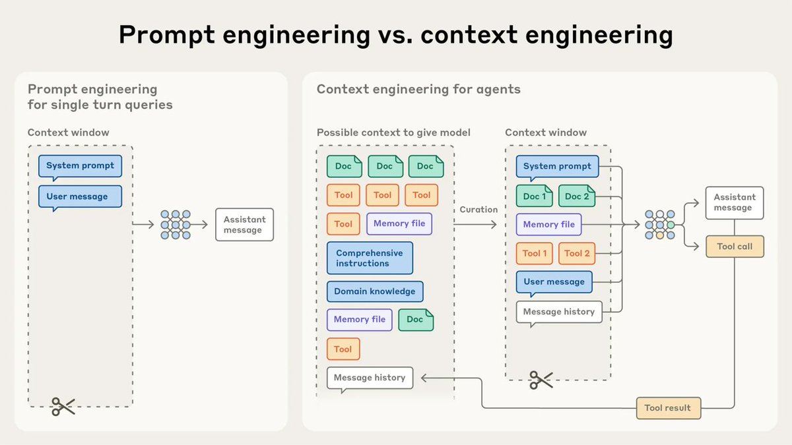
原文配图 · Codez (@0xCodez) · 2026/08/17 · context 的「cut + layer」哲学。
两条规则让「删」这件事变安全:
按块删,不要按行删——一句话躲在你的 evals 噪声底里,告诉你不了什么。整段整段删,evals 才有信号。
把绝对指令改成原则——与其「绝不写多行注释」,不如写「让代码读起来像周围的代码——匹配注释密度、命名风格、习惯」。规则给一个固定答案,原则给 Claude 一种方法,让它读你的 repo 自己找正确答案。
# payments-api Subscription billing and invoicing for the web app. ## Gotchas // Non-obvious. Claude cannot infer these by reading the repo. - All shared types live in `src/types.ts` — one monolithic file. - `Money` is integer cents, never a float. - Webhook retries must stay idempotent — provider replays for 72h. - `db/legacy/` is frozen. Read it, never edit it. ## Deeper guides - Verification → `.claude/skills/verify/` - Releases → `.claude/skills/deploy/` // NOT here: directory tree, framework, test runner, language // version. Claude reads those from the repo itself.
活下来的部分进树,不是卷轴。Anthropic 给了一个硬数字:CLAUDE.md 控制在 200 行以内,只放 Claude 没法自己推断的 gotcha。其他全部升级为 skill(description 启动时加载,body 用时加载)或 path-scoped 规则(只有匹配的 file 被读时才加载)。
这是 Anthropic 的实测:删 80% system prompt、coding evals 不下降的那一刀——拿同样的方法动你的 CLAUDE.md,通常还能再砍 30~50%。
Tools & MCP - what the agent can reach
工具是 agent 触碰世界的方式,而工具的描述就是 context——所以这是「agent 能做什么」和「agent 负担得起知道什么」之间的铰链。
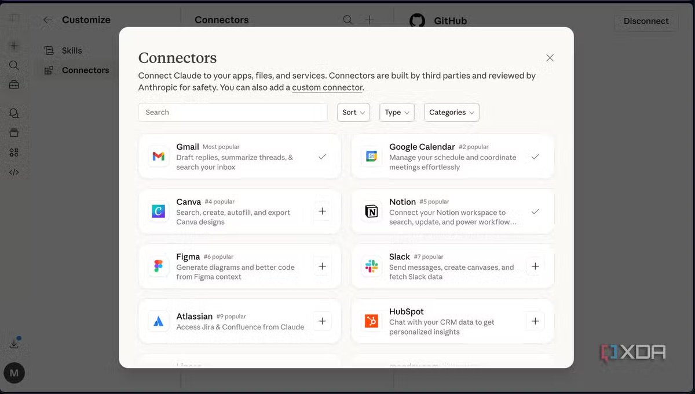
原文配图 · Codez (@0xCodez) · 2026/08/17 · 工具设计:description 既是文档也是发现表面。
过去的建议是用例子教工具用。现在反过来了:对当前的模型来说,例子反而把 Claude 困在它们描述的那一小块探索空间里。设计有表现力的参数吧。
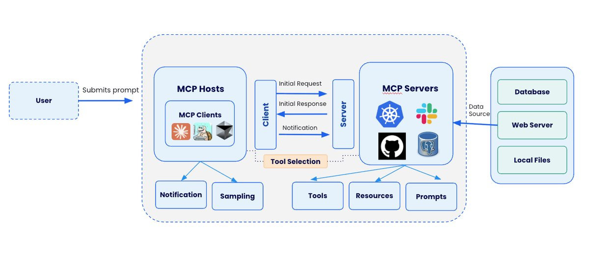
原文配图 · Codez (@0xCodez) · 2026/08/17 · MCP tool description:use when + 类型作为文档。
一个 pending | in_progress | completed 的 status 枚举不需要一个例子就把整条 lifecycle 教会了——类型本身就是文档。Anthropic 在 SWE-bench Verified 上跑到 SOTA,部分靠的是对工具描述的精确打磨,不是模型本身的改动。
@mcp.tool()
def find_stalled_shipments(hours: int = 24) -> list[dict]:
"""Shipments with no scan event in N hours.
Use when ops asks what is stuck, or before an escalation review."""
return query(STALLED_SQL, hours)
@mcp.tool()
def reroute(shipment_id: str, hub: str, reason: str) -> dict:
"""Reroute a shipment. Writes an audit row — compliance
requires a reason on every manual intervention."""
return post_with_audit(shipment_id, hub, reason)
# "Use when..." is the discovery surface for tool search.
# `reason: str` is required, so the audit trail cannot be skipped.
# The type enforces what a paragraph of instructions would only ask for.
延迟加载比一次性倒出来强。Claude Code 只加载 MCP 工具名——大概 120 token,schema 通过 tool search 按需拉。把检索机制套到工具描述上(而不是一次性全加载),selection accuracy 提升了大概 三倍。
这把 description 变成了发现表面:说工具什么时候用,不是只说工具能干什么。Claude 找不到的工具,就是没 ship 的工具。
Memory - what survives the window
每个长任务最后都会超过一个 window。跨过那条边界的时候发生什么,是个设计决定——大多数人从来没做过这个决定,他们让 auto compaction 自己猜,然后奇怪为什么 agent 忘了 1 小时前说的一个 constraint。
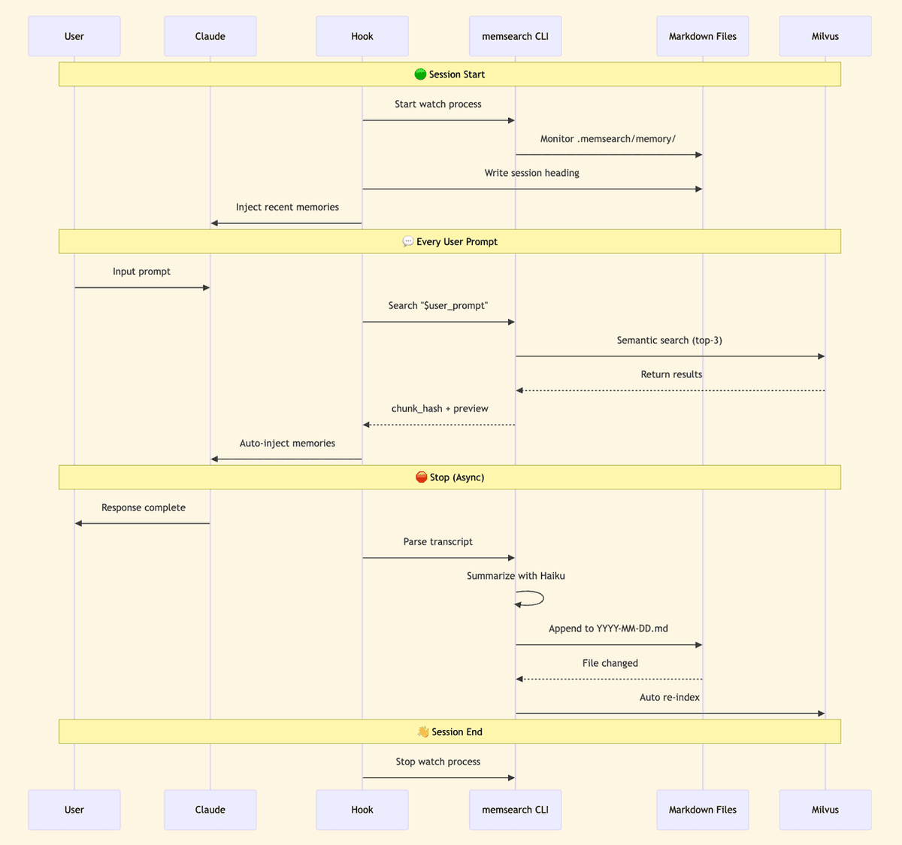
原文配图 · Codez (@0xCodez) · 2026/08/17 · memory 加载机制:re-injected vs in-history。
机制是具体的、值得记住的。项目根的 CLAUDE.md 和 auto memory 从磁盘重新注入。但用 paths scoped 的规则、嵌套的 CLAUDE.md 文件活在 message history 里——它们会被 summarize 掉,然后 不会再回来,除非匹配的 file 重新被读。
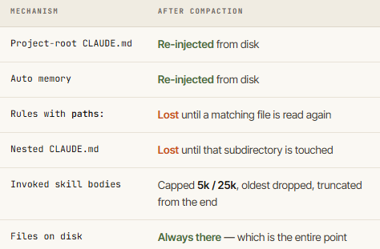
原文配图 · Codez (@0xCodez) · 2026/08/17 · plan file / progress log 留磁盘是跨 session 的最可靠 memory。
被 invoke 的 skill body 会回来,cap 是 每个 5k、总共 25k,老的先丢、从尾部截断——所以关键的东西放在 SKILL.md 的顶部。
最靠谱的招是计算机里最老的那个:写到文件里。一个 plan 文件、一份 progress log、agent 边干边改的 notes。它持久存在、不占 window,因为它活在磁盘上,跨过 compaction 也能活下来。/compact focus on the auth bug 帮你刻意压缩——只留你选的东西。/clear 在下一个任务不依赖前面 20 条消息时,被严重低估了。
Loops - when to stop
一个 agent loop 就是 act → observe → decide → repeat。整条工程的难题全活在最后一步:它怎么知道自己搞完了?
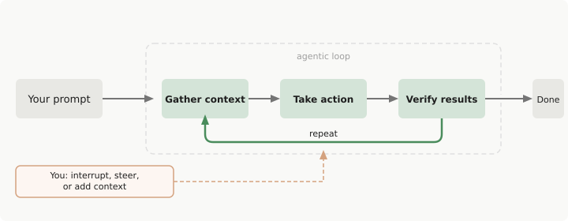
原文配图 · Codez (@0xCodez) · 2026/08/17 · loop:什么时候停。
让它自己跑,模型在两个方向都答得很差——要么在造了一半的东西上宣布胜利,要么在 3 个迭代前就搞完的事情上磨到天荒地老。这两个都不是 prompt 能修的,因为它们是结构性的。
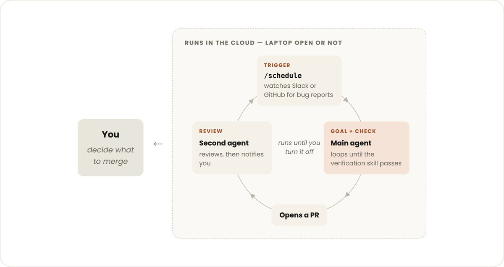
原文配图 · Codez (@0xCodez) · 2026/08/17 · loop-until-dry:K 轮没新东西才停。
停下来的条件应该放在 模型判断之外的代码里。对有界的工作,就是 test gate 或 schema check。对大小未知的探索,收敛模式是 loop-until-dry——一直跑到 K 轮连续没新东西。
const seen = new Set(); const confirmed = []; let dry = 0;
while (dry < 2) { // stop after 2 empty rounds
const found = await runFinders();
const fresh = found.filter((b) => !seen.has(key(b)));
if (!fresh.length) { dry++; continue; }
dry = 0;
fresh.forEach((b) => seen.add(key(b)));
// ^ dedupe against SEEN, not against confirmed.
// Backwards, and this loop never terminates.
confirmed.push(...(await verify(fresh)));
}
一个细节决定整个东西能不能跑通,几乎所有人都第一次做错:dedupe 对比的是「见过的」,不是「已确认的」。否则被拒的发现每轮重新出现,loop 永远跑不干——你造了一台永远付费重新发现同样死胡同的机器。
Loops - who checks the answer
一个收敛的 loop 还是收敛在模型相信的东西上。修法是 verifier——一个在模型自身判断之外、唯一工作是尝试杀掉这个发现的东西。如果它活下来,就过;如果没活下来,就永远到不了答案。
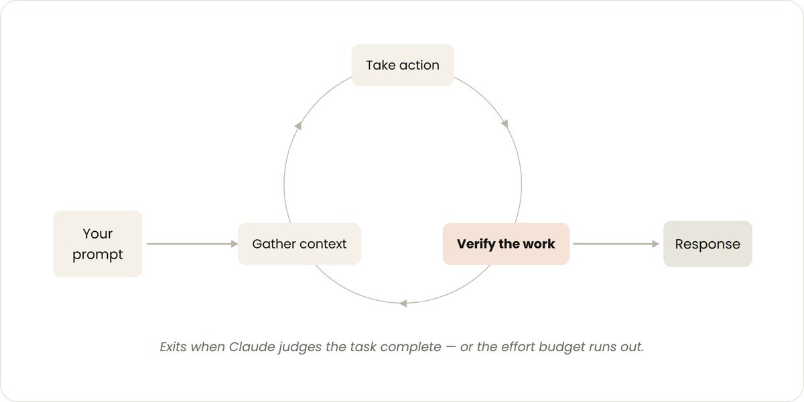
原文配图 · Codez (@0xCodez) · 2026/08/17 · verifier:对抗式 / 视角多样性 / judge panel。
三种模式值得手里有:
对抗式 verify——对每个发现,spawn N 个独立的 skeptic、prompt 让它反驳;只有多数 survives 过才留。
视角多样式 verify——给每个 verifier 一个不同的视角(正确性、安全性、可复现性),因为多样性抓得到 N 个一模一样的检查永远抓不到的失败模式。
Judge panel——从不同角度生成 N 个 attempts,用并行的 judge打分,从赢家合成、嫁接 runner-up 里最好的部分。
› For each finding, spawn three verifiers - correctness, security, reproducibility. Accept only what survives two of three. ● 6 findings → 18 verifier agents, running in parallel ✓ missing auth on /invoices/:id 3/3 — accepted ✓ race in webhook retry 2/3 — accepted ● "unsafe regex in validator" 0/3 — killed ● "N+1 query in dashboard" 1/3 — killed 2 of 6 findings were confident and wrong. The loop caught them, not your reviewer, and not your users.
注意这条指向哪里。Verifier 就是 inline 跑的 eval——跟 Layer III 同样的纪律,只是从 per-release 移到 per-result 套。那些 verifier 写得好的团队,后面 step 11 会轻松得多——因为他们已经把「什么算好」这件事写下来了。
Graphs - what runs in parallel
大多数人把 agent 写成一条直线——step 1、step 2、step 3,每一步礼貌地等上一步。然后他们发现,有一半的步骤根本不需要等。
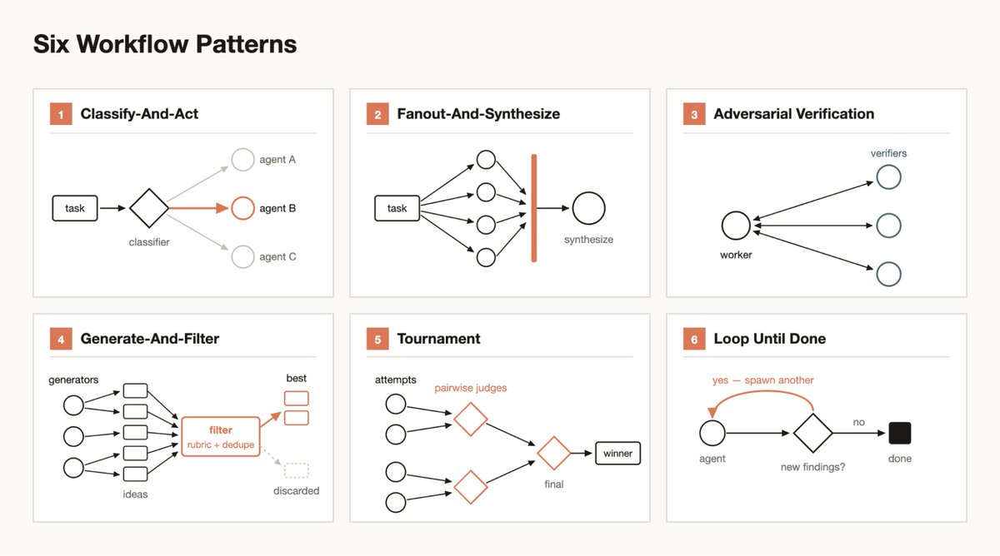
原文配图 · Codez (@0xCodez) · 2026/08/17 · diamond 形状:fan out + reduce + synthesize。
一个 node 是一份工作,一条 edge 是「这个输出喂给那个输入」。如果没有数据穿过,就没有 edge——那个等待就是纯粹的浪费。
主力形状是 diamond——fan out 收集广度,plain code 收口,一个 agent 做综合。reduce 一步值得强调,因为钱从这里漏——flattening 和 deduping 是 flatMap 加一个 Set,不是又一个 agent。
Edge 是免费的。把 agent 留给判断,不是 plumbing。
› Run a workflow to audit every route under src/routes/ for missing auth. One agent per route file, verify each finding before reporting. ● Claude wrote an orchestration script · launching… ✓ Scope 1/1 ✓ Fan-out 18/18 one agent per file ◯ Verify 11/18 3-vote skeptics per finding ○ Synthesize 0/1 your session stays responsive — the fleet runs in the background
天花板真的高。Claude Code 的 dynamic workflows 在一次 run 里能协调 1000 个并行的 subagent,而 orchestration 的模型 token 成本是 0——因为它是个 script,不是一段对话。
这套架构是一个团队怎么用 6 天把 ~960,000 行 Bun runtime 从 Zig 移植到 Rust,99.8% 的测试套件还在过。
Graphs - what the shape costs you
Topology 不是装饰——它是你在 latency和和花销上最大的杠杆,两个选择承担了大部分。
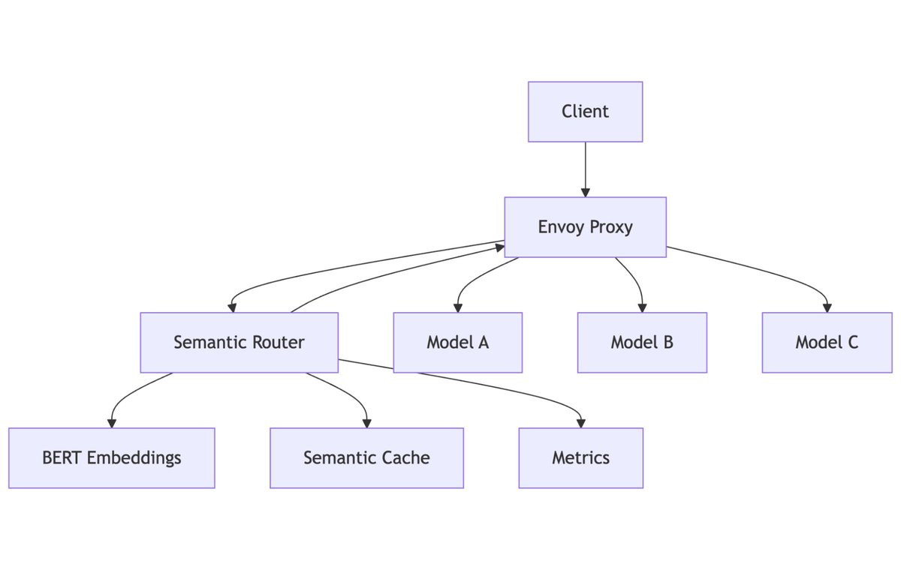
原文配图 · Codez (@0xCodez) · 2026/08/17 · parallel() vs pipeline() 选择。
第一,parallel() 对比 pipeline()。parallel() barrier 让所有东西等最慢的那个节点,然后下一阶段才开始。pipeline() 让每个 item 独立流过所有阶段——item A 可以在 stage 3,同时 B 还在 stage 1。
默认 pipeline。只有当一个 stage 真需要所有前序结果同时到位(比如 cross-set dedupe)时才用 barrier。「感觉更干净」不算理由——barrier 的 latency 是真实的、可度量的、浪费掉的时间。
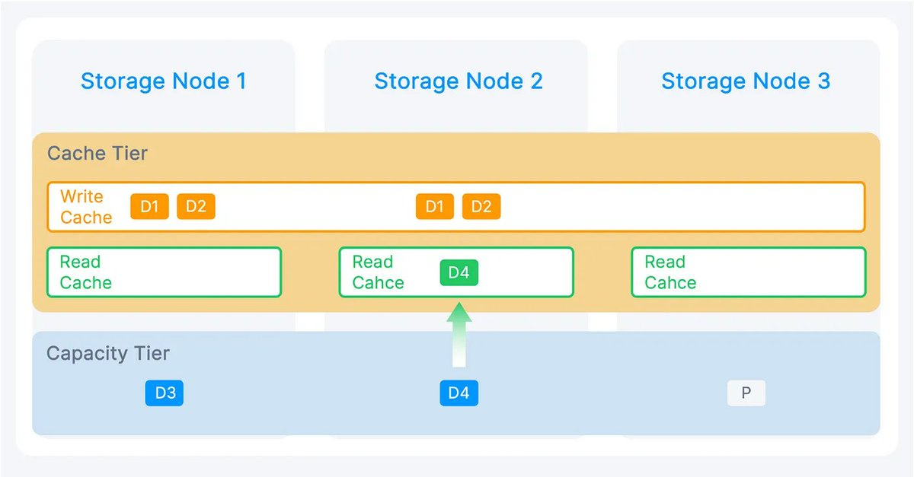
原文配图 · Codez (@0xCodez) · 2026/08/17 · 模型分层:cheap fan-out + top-tier merge。
第二,按 model 分层。每个 subagent 默认继承你 session 的 model,除非 script 显式 override——所以一次大 run 默认全按你的 top tier 计费。
有界的、重复的节点(提取这个字段、分类这个 ticket)放到更便宜的 model 上,merge 节点——判断真正发生的地方——保持在高 model。一百个便宜的 fan-out 节点喂给一个 top-tier synthesis,跟同一份工作平铺开来比,成本是一小部分,最终质量一样。
Harness - surviving session death
Anthropic 把这个问题框定得完美:一个长任务就是 一个软件项目,由轮班的工程师来写,每个新工程师来上班时对上一班一无所知。
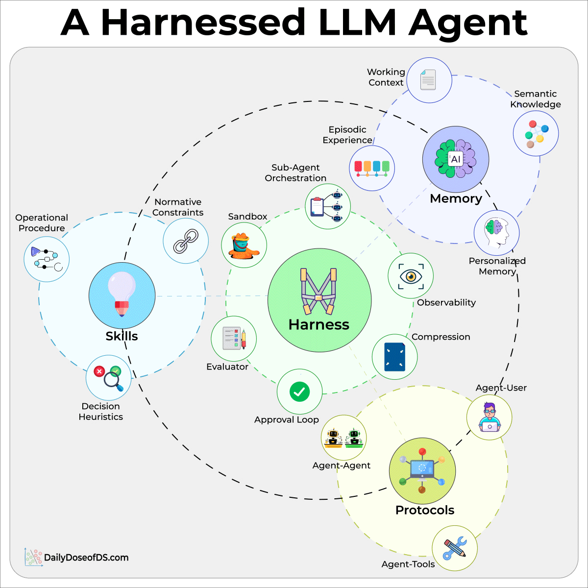
原文配图 · Codez (@0xCodez) · 2026/08/17 · initializer agent:搭脚手架、写 init.sh、progress log、feature list。
光靠 compaction 不够。就算 frontier model 在 context window 上 loop「做一个 claude.ai 的 clone」也达不到要求——而且它会以两种特定的、可重复的方式失败。
第一,agent 试图一炮打响整个 app,跑到一半 context 用光,留给下一会的是一个半成品的、没文档的、需要反编译的功能。第二,项目稍后某个阶段,一个 agent 看了看周围,看到真实进展,宣布活儿干完了。
两件事在任何 coding 启动前就要修好——一个 initializer agent 跑一次把环境搭起来:一个 init.sh 启动 dev server、一份 progress log、一个 initial git commit、一份 JSON 格式的 feature list——给 claude.ai clone 这样的项目 200 多项,每一项都标 failing。
{
"category": "functional",
"description": "New chat button creates a fresh conversation",
"steps": [
"Navigate to main interface",
"Click the 'New Chat' button",
"Verify a new conversation is created",
"Check that chat area shows welcome state"
],
"passes": false
}
// 200+ of these, all starting false. Agents may ONLY flip `passes`.
// "It is unacceptable to remove or edit tests" — deliberately strong
// wording, because a model that CAN edit the spec WILL edit the spec.
一个值得直接抄的细节:他们选 JSON 不用 Markdown做那份 list,因为模型乱改 JSON 的概率可测量地低。
Harness - one increment per session
环境搭好之后,每个 coding session 拿到一个合同:认清方向、挑一个 feature、像用户一样验证它、把 repo 留干净。
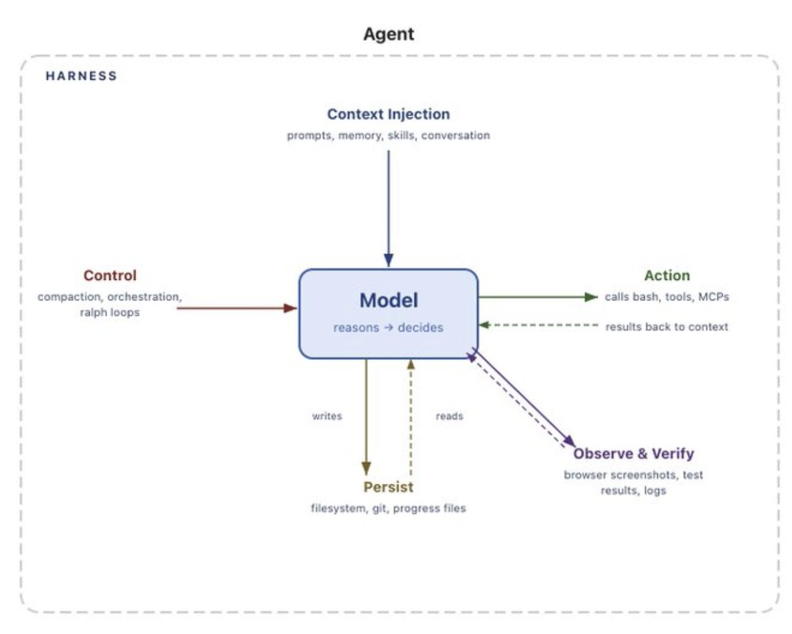
原文配图 · Codez (@0xCodez) · 2026/08/17 · 一个 session 一个 feature。
「干净」就是真实团队里的那种干净——没大 bug、代码有序、下一位工程师能开始干不用先替别人收拾残局。
认方向的仪式是机械的、每次都能省 token:pwd、读 progress 文件、读 git log、读 feature list、跑 init.sh、动手任何东西之前先测一遍基础还在跑。最后那个检查比听起来重要——少了它,一个 agent 在已经坏掉的 app 上接着做新 feature,只会让破损更深。
[Assistant] Getting my bearings on the current state. [Tool] bash — pwd [Tool] read — claude-progress.txt [Tool] read — feature_list.json [Tool] bash — git log --oneline -20 [Tool] bash — ./init.sh start the dev server [Assistant] Verifying fundamentals before touching anything… ✓ core chat, theme switching, conversation loading all pass [Assistant] Picking the highest-priority failing feature. no guessing. no archaeology. the previous shift left notes.
关于「标完成」这件事:Claude 的倾向是改完一个、跑几个 unit test、就宣布搞定——从来不去端到端验证一遍这个 feature。
给它真的测试工具,要求它像真人用户那样去验——浏览器自动化、真的点击。这一条单独的要求在 Anthropic 的实验里显著提升了表现,抓到了光看代码根本看不见的 bug。
Evals - a number, not a vibe
崩溃点永远是同一句话:用户说 agent 感觉变差了,团队除了猜+验证,根本没方法核实。
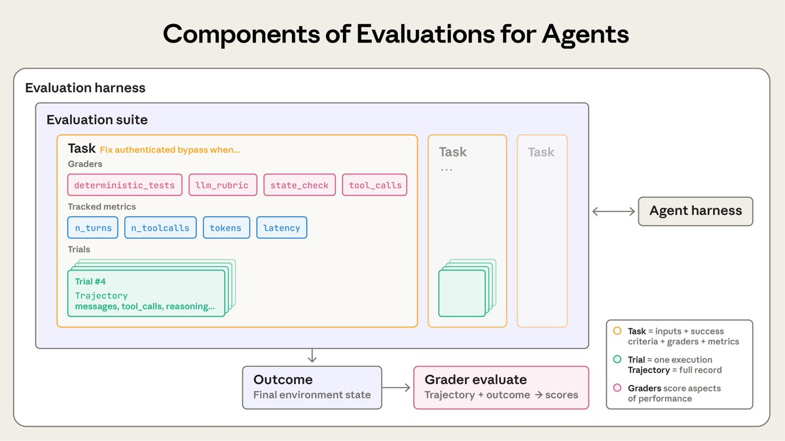
原文配图 · Codez (@0xCodez) · 2026/08/17 · evals 起步:20-50 个真实失败的任务。
没有 evals,debugging 是被动的——等投诉、手动重现、修、祈祷其他东西没回归。你分不清真实回归和噪声。
起步比你想象的小。团队拖是因为他们觉得需要几百个 task;20-50 个从真实失败里抽出来的就够了,因为早期改动效应 size 大。
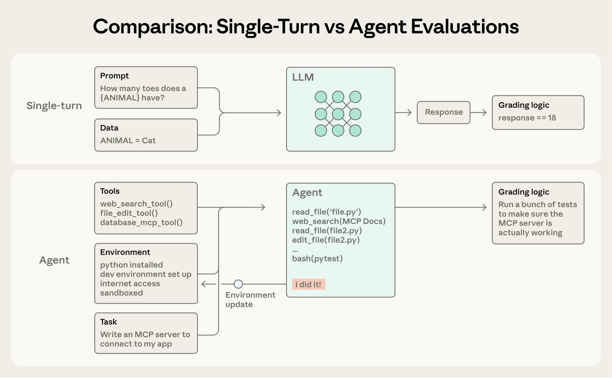
原文配图 · Codez (@0xCodez) · 2026/08/17 · grader 三类组合:code / model / human。
从你已经在手测的东西、你 bug tracker 里的、你 support 队列里抓。写的时候让 两个 domain 专家独立得出同样的判断——任务里的模糊变成指标里的噪声。建 平衡集——既测「这个行为应该触发」也测「不应该触发」,不然你会调出一个到处搜东西的 agent。
task:
id: "fix-auth-bypass_1"
desc: "Fix authentication bypass when password field is empty"
graders:
- type: deterministic_tests # fast, objective, reproducible
required: [test_empty_pw_rejected.py]
- type: llm_rubric # nuance tests can't capture
rubric: prompts/code_quality.md
- type: static_analysis
commands: [ruff, mypy, bandit]
- type: state_check # the OUTCOME, not the claim
expect: { security_logs: { event_type: "auth_blocked" } }
tracked_metrics:
- type: transcript
metrics: [n_turns, n_toolcalls, n_total_tokens]
# The agent says "fixed". The state_check decides whether it was.
# Grade outcomes, not announcements.
刻意组合三种 grader。Code-based——快、便宜、客观;能用的地方都用。Model-based——rubric 处理 nuanced 的事、用人类校准、理想是每个维度一个独立 judge 而不是一个大 judge 打所有。Human——金标准,谨慎用,用来校准其他两个。
还有一条:评 agent 实际产生的东西,不是它走的路径。检查一串确定的工具调用很脆,因为 agent 经常会找到你没预料到的有效做法。
Evals - keeping the number honest
没人读的 suite 就是没人该信的数字。你要读到很多次试验的 transcript,才会知道你的 grader 行不行——一个任务挂了的时候,transcript 告诉你到底是 agent 真做错了,还是你的 grader 拒了一个有效的解。
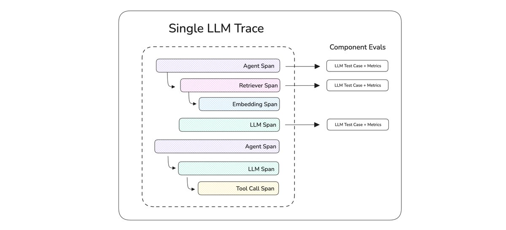
原文配图 · Codez (@0xCodez) · 2026/08/17 · pass@k vs pass^k,saturation 陷阱。
失败应该是 fair 的——一眼能看出来哪儿错了、为什么错。
两个陷阱让好 agent 看起来很烂。跨多 trial 全 0% 通过率通常意味着任务坏了,不是 agent 不行。Opus 4.5 最初在 CORE-Bench 上拿 42%——后来有研究员发现评分太死板:期望「96.124991…」就把「96.12」拒了;任务说明歧义;任务不可复现。修完之后:95%。
反过来的陷阱是 saturation——一个跑到 100% 的 eval 只能追回归,没坡给你爬,真实的能力提升开始看起来像噪声。
然后把两个指标分清楚。pass@k 是 k 次里至少一次成功的概率——k 越大它越大。pass^k 是 k 次里全成功的概率——k 越大它掉得越快。单 trial 75%,三次 都过只剩 ~42%。
一次成功就够的用 pass@k;面向客户的用 pass^k,用户期望每次都跑通。
› Run the suite against the new model and compare to baseline. ● 47 tasks × 3 trials · 141 runs · parallel capability suite pass@1 61% → 74% +13 regression suite pass@1 99% → 99% held consistency pass^3 52% → 68% +16 ● 2 regressions: refund_partial, escalation_tone → transcripts written to ./eval-results/failures/ the upgrade decision took an afternoon, not three weeks
最后,把它做成 routine。把 suite 接到 CI 里,让它在每次改动和每次 model 升级时都跑。这就是把一个 model 发布从「几周手测」变成「跑一天 suite + 读 diff」的事——没 evals 的团队永远追不上来的复利差距。
7 个 jobs to run with Claude — 一个 pillar 一个
Codez 给的 7 个可立刻跑的 Claude workflow,每个对应一个 pillar。读完挑一个你今晚就能跑的。
打开那个你从来没看过的 window。先量再砍。memory-files 数字重 = CLAUDE.md 超重——一个命令诊断,一个下午修。
› /context then /doctor
审一遍你的工具描述。每条 description 都应该说「什么时候用」,不只是「能干什么」。那句话是发现表面——少了它,一个接好的工具 Claude 永远不挑。
› Review every tool description in this MCP server. Add a "use when" sentence to each and tighten the parameter types.
把状态搬到文件系统。让 Claude 写一份 plan 文件,边干边改。它 活在磁盘上所以跨 compaction 也活——长任务跑到一半不再丢主线。
› Before you start, write the plan to plan.md and update it after each step. Re-read it whenever you resume.
给你的 loop 配一个 verifier。挑一个 Claude 自己判断「搞完了」的任务——加一个外部检查,看看第一个答案过不了 3 个 skeptic 的概率有多大。
› After each fix, spawn three verifiers — correctness, security, reproducibility. Accept only what survives two of three.
把一条直线任务变 fan-out。找一个你顺序遍历文件或 source 的任务——一个 item 一个 agent,同时跑,然后一个 merge。wall-clock 的差距就是全部教训。
› Run a workflow to audit every route under src/routes/. One agent per file, verify each finding, then synthesize.
给多 session 项目搭脚手架。在长 build 之前,让 Claude 写 init.sh、一份 progress log、一份 所有 feature 标 failing 的 JSON list。
› Act as an initializer agent: write init.sh, claude-progress.txt, and feature_list.json covering every requirement, all passes:false.
把上周的 bug 变 suite。打开 bug tracker,把真实失败写成 20 个判定标准不含糊的 task。这套 suite 比你这季度能接的任何 framework 都值钱。
› Here are 20 real failures. Write each as an eval task with deterministic graders where possible and a rubric where not.
The ones who build the twelve steps will ship agents that work on days the model is having a bad one — which, in production, is the only reliability that has ever mattered.
— CODEZ · AI AGENT ENGINEER IN 2026 · CONCLUSION
SOURCES & CREDITS
引用与原文出处
-
ORIGINAL ARTICLE
AI Agent Engineer in 2026: 12 steps roadmap - Loops, Graphs, Evals, Context, Harness (Full-Course)
作者:Codez (@0xCodez) · 发布于 2026/08/17 · 66,958 浏览 · 501 赞 · 78 转推 · 819 收藏 · 19 回复
推文链接:https://x.com/0xCodez/status/2089393338977829278
文章链接:https://x.com/i/article/2089344705402179584 - AUTHOR · X https://x.com/0xCodez
- AUTHOR · SUBSTACK substack.com/@0xmovez — Codez 的 newsletter,持续发 AI agent 一手观察
- RELATED · 14-STEP GRAPH ENGINEERING 同作者前一篇:14 步 Graph Engineering · 本文是它的「全栈版」,把 Loops / Graphs / Evals 扩展到完整工程 7 pillar
-
REFERENCED · CLAUDE CODE /CONTEXT
/context+/memory+/doctor命令来自 Claude Code 官方 CLI,本文 step 1 + step 2 实操验证 - REFERENCED · ANTHROPIC INIT.GUIDE anthropic.com/engineering · 本文 step 9 的 initializer agent 思路来自 Anthropic 长任务研究
- INTERPRETATION 本文为完整翻译版本,按原文 12 步 + 7 个 jobs + 结论的顺序重新组织成 12 章 + 1 个行动清单 section。所有 19 张原文配图按出现位置完整保留(图说附 Codez 原文上下文 + 我的中文补充)。原文嵌入的 9 段代码片段(CLAUDE.md 模板 / MCP tool / loop dedupe / verifier / fan-out log / feature list JSON / orientation ritual / eval task / 升级 diff)按 `.code-block` 渲染成可读代码面板。如需引用请以原文为准。
最值得今晚就做的一件事——打开 /context,看看 memory files 那一栏是多重。如果是几 KB,恭喜;如果是几十 KB,这就是你下一步的优化点。
demo 谁都能让跑起来,
真正的活儿是 demo 之后那一整套系统。
— CODEZ · AI AGENT ENGINEER IN 2026